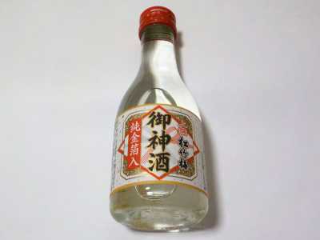
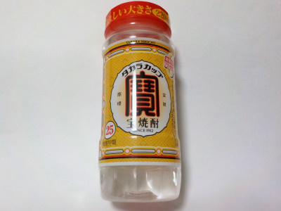

上撰 松竹梅 御神酒 純金箔入
更新日 : 2023/06/03

お正月用のお酒だと思うんですが、残ってたみたいでとても安く販売していました。
瓶を振って光に当てると、金箔がキラキラ光ってとても綺麗です。金製のアイテムが何か欲しいってちょっと思いました。
このお酒は飲んだ時に、口の中や喉に刺激があると思いました。私の体には合わないのかなー。たまたま今日の体調が悪いなかなー。
京都市伏見区竹中町609番地
更新日 : 2023/06/03

お正月用のお酒だと思うんですが、残ってたみたいでとても安く販売していました。
瓶を振って光に当てると、金箔がキラキラ光ってとても綺麗です。金製のアイテムが何か欲しいってちょっと思いました。
このお酒は飲んだ時に、口の中や喉に刺激があると思いました。私の体には合わないのかなー。たまたま今日の体調が悪いなかなー。
更新日 : 2023/01/16

商品はよく見るんですが、買ったのは初めてです。
柚子の種を使った化粧液を作るのに、容器と焼酎を使いたくて買いました。
柚子の種を入れるスペース分の焼酎を飲んだんですが、スッキリしてて、少し甘みがあって美味しかったです。
よくある感じの麦焼酎や芋焼酎とは感じが違う焼酎だと思いました。私はこの味が好きだな。
2025/12/11 税込み178円で購入。